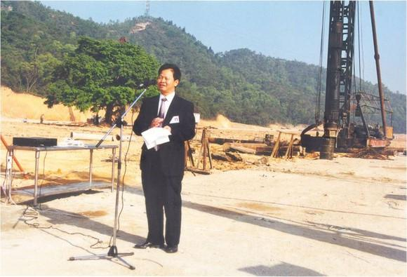
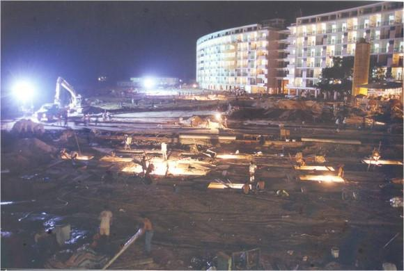
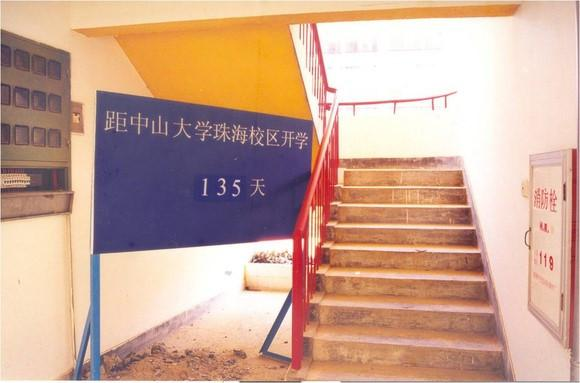
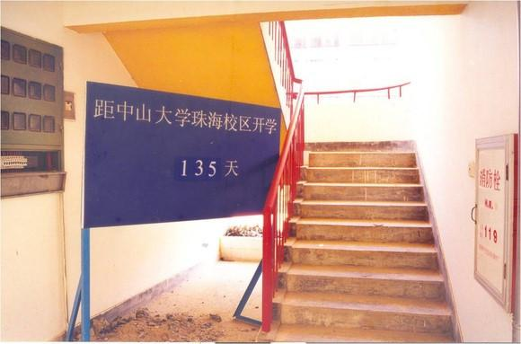
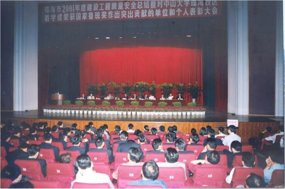

认得出这里吗？留意后面的那棵树，就是我们平时等小白的地方。当时为了保留这棵树，把原本计划是直的榕5榕6建成弯的，这可不是一般的浪费人力物力啊
认得出这里吗？留意后面的那棵树，就是我们平时等小白的地方。当时为了保留这棵树，把原本计划是直的榕5榕6建成弯的，这可不是一般的浪费人力物力啊


校区是一个庞大的工地，通水、通电、通路、教学楼、宿舍楼、生活服务中心、食堂、体育场、图书馆、绿化、文化设施等各项工程同时开工，最高峰是有6000名工人参加建设。24小时昼夜不停，以杨校光副校长为领头的开荒者们全力以赴地投入到一项光荣而艰巨的世纪工程中,挑灯夜战就为赶在9月1日前完工

校区是一个庞大的工地，通水、通电、通路、教学楼、宿舍楼、生活服务中心、食堂、体育场、图书馆、绿化、文化设施等各项工程同时开工，最高峰是有6000名工人参加建设。24小时昼夜不停，以杨校光副校长为领头的开荒者们全力以赴地投入到一项光荣而艰巨的世纪工程中,挑灯夜战就为赶在9月1日前完工

至2000年7月15日，亚洲最长的单体建设教学实验大楼竣工，仅用了223天时间，创造了惊人的速度，该楼以独特的设计、先进的工艺获得了珠海市有史以来唯一的一个中国建筑最高奖鲁班奖
至2000年7月15日，亚洲最长的单体建设教学实验大楼竣工，仅用了223天时间，创造了惊人的速度，该楼以独特的设计、先进的工艺获得了珠海市有史以来唯一的一个中国建筑最高奖鲁班奖
在珠海市全力支持下，珠海校区以特区速度在短短的一年时间建成。特别是那一栋骑在两山之间、如同巨坝锁江的教学实验大楼，令人叹为观止。全长571米，是亚洲最长的单体教学楼，建筑面积7．7万平方米，可容纳两万名学生上课。
从去年9月12日签订协议，到今年9月9日中大珠海校区开学，刚好一年时间。